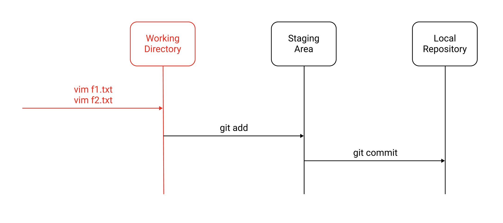
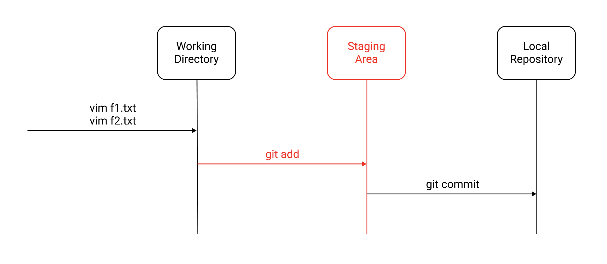
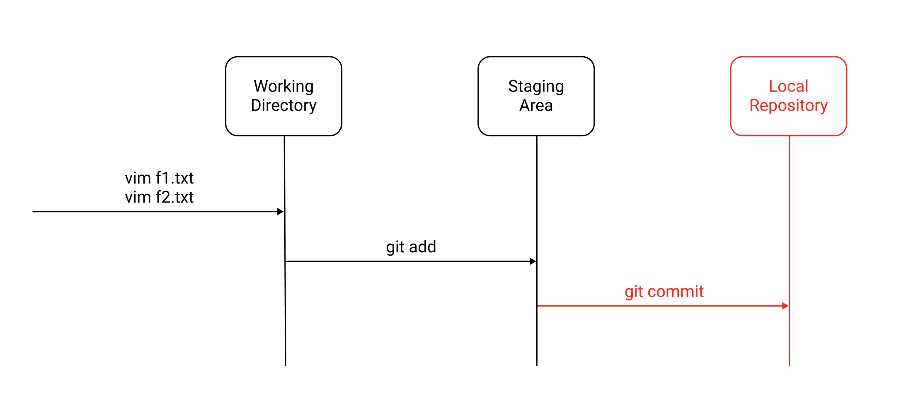

[Git, GitHub] (1) Git 이란? - add, commit, diff
목차
Git 이란
Git은 버전 관리 시스템이다. Git을 사용하면 프로젝트의 변경사항을 쉽게 추적할 수 있다.
Git 설치 및 설정
Mac OS 환경에서는 Homebrew로 Git을 쉽게 설치할 수 있다.
1 | // 설치 |
Git이 설치되면 계정을 설정해야한다.
1 | $ git config --global user.name "yologger" |
git config명령어로 설정을 확인할 수 있다.
1 | $ git config --list |
모든 명령어를 확인할 수 있다.
1 | $ git --help |
프로젝트 초기화
git init명령어로 프로젝트를 초기화한다.
1 | // 프로젝트 생성 |
git init으로 프로젝트를 초기화하면 .git디렉토리가 생성된다. Git이 이 디렉토리를 관리한다는 의미며, 버전 관리에 필요한 데이터들이 이 곳에 저장된다.
1 | $ ls -al |
사용법
Git Commit은 다음과 같은 단계로 이루어진다.
(1) 파일 생성
우선 f1.txt파일을 생성하자.
1 | $ vim f1.txt |
1 | source: 1 |
git status명령어로 상태를 확인할 수 있다.
1 | $ git status |
Untracked files에서 f1.txt을 확인할 수 있다. 파일이 Working Directory에 추가되었으나 Git이 아직 추적하고 있지 않고있다는 의미다.
(2) Staging
Git이 파일을 추적하도록 하는 것을 Staging이라고 한다. git add <file_name>명령어를 사용한다.
1 | $ git add f1.txt |
다시 상태를 확인해보자.
1 | $ git status |
f1.txt파일이 Untracked files에서 Changes to be committed로 이동했다. 이제 Git이 이 파일을 추적하고 있다.
모든 파일을 Staging 하려면 -A옵션을 추가한다.
1 | $ git add -A |
물론 Staging을 취소할 수도 있다.
1 | $ git rm --cached f1.txt |
(3) Commit
git commit명령어는 현재 상태를 Local Repository에 저장한다.
1 | $ git commit |
이때 Commit Message를 적어준다.
1 | First Commit |
명령어를 입력하면서 Commit Message를 함께 전달할 수도 있다.
1 | $ git commit -m "First Commit" |
-am옵션을 사용하면 git add와 git commit을 한꺼번에 할 수 있다.
1 | $ git commit -am "First Commit" |
git log명령어로 Commit한 버전을 확인할 수 있다.
1 | $ git log |
위 결과물에서 11111을 Commit ID라고 한다. 위 예제에서는 알아보기 쉽게 11111로 작성했으나 실제로는 3bc844016976f5a38bdd669dbf83c12b53318d47처럼 알아보기 어려운 형태로 생성된다.
(4) f2.txt 파일 추가하기
이제 f2.txt파일을 생성해보자.
1 | $ vim f2.txt |
1 | source: 2 |
상태를 확인해보자.
1 | $ git status |
Staging 한다.
1 | $ git add f2.txt |
상태를 확인하자.
1 | $ git status |
두 번째 Commit을 하자.
1 | Second Commit |
Git 로그를 확인해보자. 두 번째 Commit이 추가되었다.
1 | $ git log |
왜 Commit 전에 Add를 할까
선택적으로 Commit을 하기 위해서다. 예제를 살펴보자.
우선 f1.txt와 f2.txt를 생성하자. 파일을 디렉토리에 추가하면 Working Directory에서 관리된다.
1 | $ vim f1.txt |

1 | $ git status |
이제 f1.txt만 Staging 하자.
1 | $ git add f1.txt |

상태를 확인해보자. f1.txt만 추적되고 f2.txt는 추적되지 않는 것을 확인할 수 있다.
1 | $ git status |
이제 Commit을 하자
1 | $ git commit |

로그를 확인해보자
1 | $ git log |
상태를 확인해보면 f2.txt는 여전히 추적되지 않고 f1.txt만 Local Repository에 추가되었다.
1 | $ git status |
git diff
git diff명령어를 사용하면 두 Commit의 차이점을 비교할 수 있다. 우선 다음과 같이 hello.kt를 작성하고 첫 번째 Commit을 한다.
1 | fun printHello() { |
1 | $ git commit -am "First Commit" |
이제 hello.kt를 수정하고 두 번째 Commit을 한다.
1 | fun printGoodbye() { |
로그는 다음과 같다.
1 | $ git log |
이제 두 Commit의 차이점을 비교해보자. git diff는 다음과 같은 형태로 사용한다.
1 | $ git diff <commit_a_id>..<commiit_b.id> |
1 | $ git diff 11111..22222 |
결과는 다음과 같다.
1 | diff --git a/hello.kt b/hello.kt |
결과를 살펴보자. fun printHello() {와 print("Hello")가 삭제되었고 fun printGoodbye() {와 print("Goodbye")가 추가된 것을 확인할 수 있다.